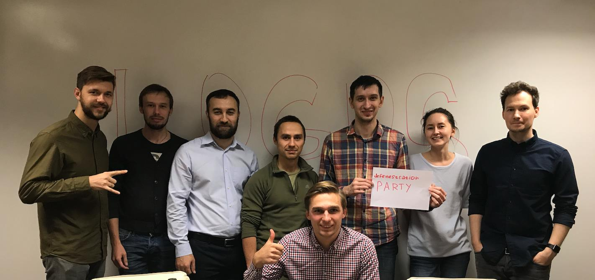
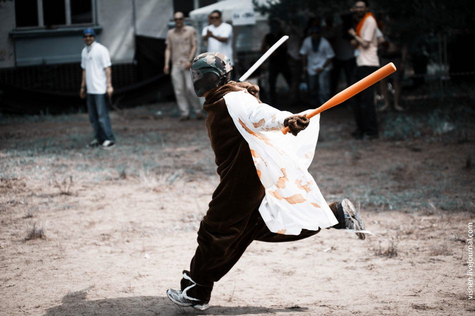
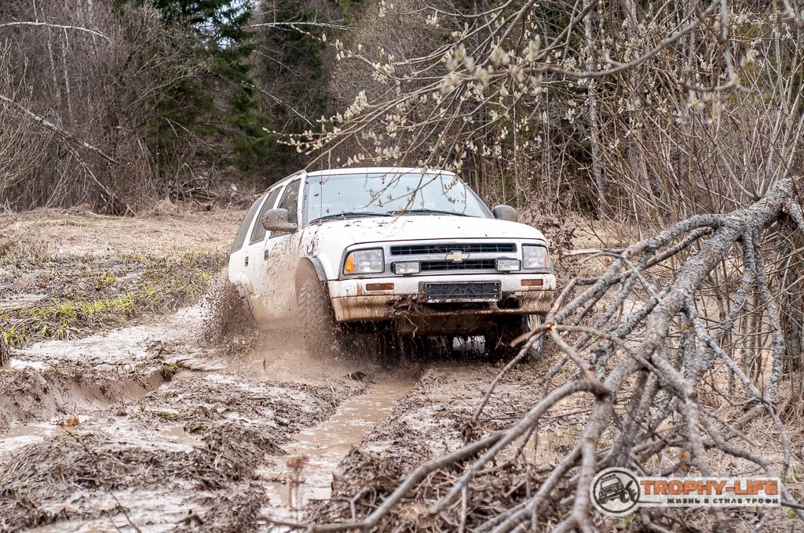
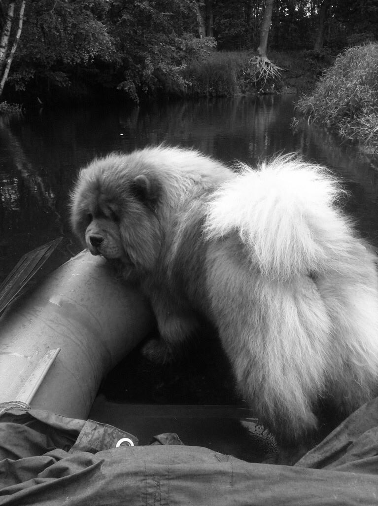
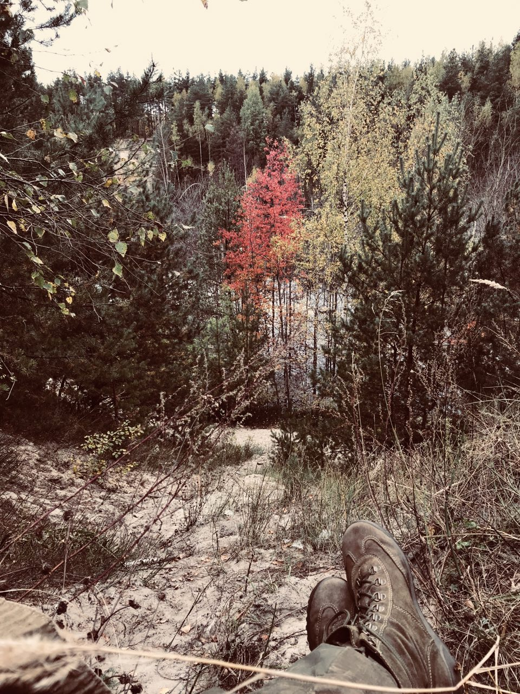
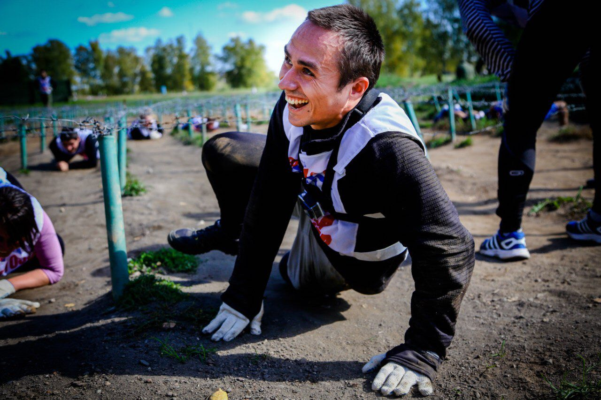
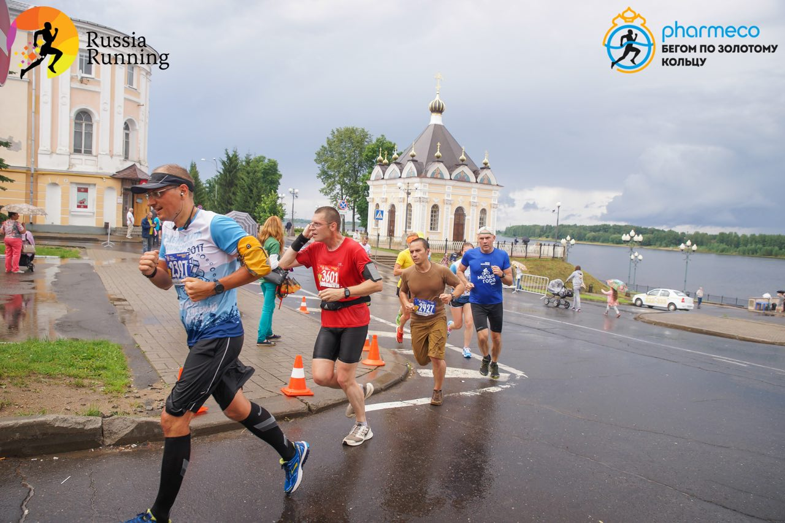
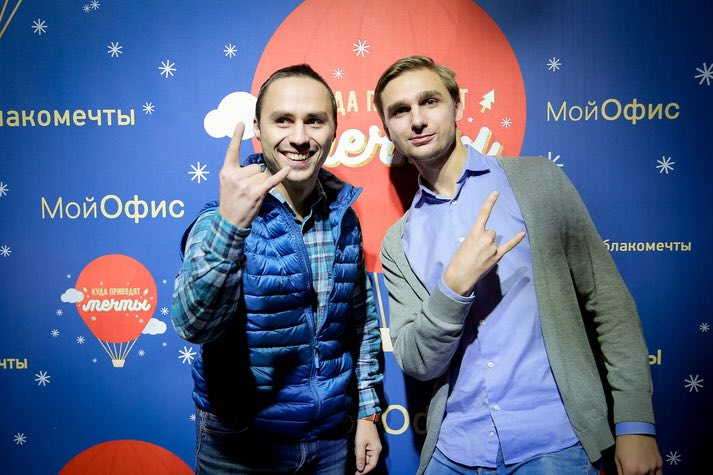

О логосе
Я пришел в копанию около 2 лет назад в команду мессенджера Логос на должность разработчика пользовательских интерфейсов. До этого занимался редизайном, а по сути - написанием с нуля frontend'а сайта Ведомости.
Для начала, хочу поблагодарить моих друзей-разработчков: Гришу, Дим (да-да у нас их несколько), Антоху и Серегу за чувство юмора, не покидающее нас даже в самых сложных ситуация, за желание помочь и разобраться в любой задаче, а не игру в «пинг-понг», которую часто можно наблюдать между backend и frontend разрабами, за зарубы в code-review и при выборе стека технологий.
 И это только разработчики, а ведь над Логосом трудятся аналитики, девопсы, дизайнеры, ПО и тестировщики - ребята, спасибо всем вам!
Совершенно искренне считаю наш отдел одним из самых дисциплинированных, организованных и просто классных. В сотый раз убеждаюсь, пускай это прозвучит банально, что главная ценность компании - это ее сотрудники.
Только сформировав дружный коллектив, можно ожидать появления качественного продукта или технологии.
Об образе жизни
Наверное, я унаследовал его от родителей вместе с любовью к природе и животным.
В университете увлекался дзюдо, ходил в качалку. Меня можно было встретить среди страйкболистов и толкиенистов.
Потом был период ролевок: Нарковойны, серия игр по мотивам Метро 2033 Глуховского, в которых я возглавлял Чеховскую станцию.
Моим постоянным прибежищем в то время был Бундок паб на большой Сухаревской. И дело тут не в алкоголе, я практически не пью до сих пор. В этом баре проходили собрания игромастеров.
После университета мы с друзьями негласно соревновались в том, кто быстрее получит права и купит автомобиль.
О машине
Однажды, прогуливаясь по Салтыковскому парку, я увидел объявление о продаже старенького Chevrolet Blazer. Влюбился с первого взгляда. Не буду утомлять техническими деталями, скажу только, что ради машины даже окончил курсы автомехаников.
В этом году Blazer прошел боевое крещение на «Рузских Срезочках»: дичайший маршрут по лесам, полям и болотам.
Несмотря на то, что наш экипаж сошел в начале второго участка трассы из-за отсутствия лебедки, нам присудили приз за самое эффектное прохождение «болотинки»!
Еще одной причиной покупки SUV стал рыжий пес по кличке Раджа. Этот «хомяк» появился в моей жизни во время защиты диплома, я постарался уделить ему максимум свободного времени, когда он был щенком.
Сейчас Радже семь, он - постоянный участник моих автоэкспедиций.

И не только авто. В прошлом году, купив двухместную лодку, мы разведали несколько подмосковных рек: Киржач, Нерскую и Бисеровские озера.
Я поклонник ПВД - походов выходного дня. Меня трудно застать дома в уикенд.
В комнате на стене висит большая карта Москвы и области, на которой маркером с 2014 отмечены автомобильные поездки. Но до сих пор уже устаревший путеводитель Афиши пройден не до конца, а ведь еще есть Wikimapia!
В России удивительная природа и... И люди. Здесь с вами не будут сюсюкаться, улыбаться по поводу и без, желать «доброго утра» или «спокойной ночи».
Зато стоит побороть недоверие, и в первую очередь - собственное, и вауля: вот вы уже едите кашу с одного гаечного ключа на посвящении в джипперы, а вот - идете гулять по Нижнему Новгороду дружной компанией бегунов или помогаете девчонкам перелезть двухметровую стенку в Гонке Героев!
Призываю обратить пристальное внимание на «внутрений» туризм: посмотрите передачи «Москва и окрестности», «Гений места» или просто отправляйтесь в Братеевский парк, Чермянку, Лосиный остров, Измайлово.
Про бег
В компании много ребят увлекаются бегом. Я пришел к нему в этом году. Мы с Гришей, тимлидом Логоса, пытались организовать забег в московском офисе компании. Так я пробежал свои первые 5км.
Потом был Нижний Новгород, Рыбинск, подмосковное Акатово. Бегаю в разных парках Москвы. Ищу свой любимый из, только вдумайтесь в эту цифру, более чем сотни парков!
Традиционный маршрут - вдоль набережной от Храма Христа Спасителя до станции метро Площадь Ильича. Что-то около 11 км. Выхожу с работы и бегу.
Жаль в офисе нет раздевалок со шкафчиками, где можно с комфортом переодеться, размяться, а потом - идти на пробежку.
Коллеги давно перестали удивляться, видя меня то в полевой, то в беговой одежде на рабочем месте. Хорошо, что дресс-код не строгий.
Планировал пробежать полумарафон в Ростове, но на последней тренировке потянул связку. Сейчас восстанавливаюсь...
Наверное, дальше уйду в трейл или триатлон.
О фейлах
Далеко не все удавалось с первого раза: были и досадные косяки, промахи и ошибки.
Только в этом году мы замерзали в Пошехонье (от холода отказала система зажигания авто), я «тонул» в Волге (снесло далеко за пределы трассы), перегревался в Нижнем Новгороде, получал травмы на тренировках. А возвращаясь к работе - писал корявые компоненты, ломал работающий функционал, тесты. Но делал выводы и шел дальше.
Я не идеален, но знаете... Я готов к приключениям, работе, трудностям и ошибкам. Одним словом, к жизни! А вы?
Всем бобра! Ваш front Логоса